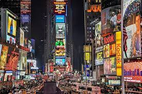

여행지 소개
미국 뉴욕

뉴욕의 관광명소 소개
뉴욕 최고의 명소를 관광하며 여행을 시작하세요. 타임스퀘어, 엠파이어 스테이트 빌딩, 자유의 여신상, 911 기념관, 메트로폴리탄 미술관, 센트럴 파크, 록펠러 센터 전망대를 둘러보고 인근 지역의 숨은 명소를 구경하면서 남은 시간을 보내세요! 뉴욕은 세계적으로 유명한 도시로, 다양한 문화, 역사, 예술적인 경험을 제공하는 여러 관광 명소가 있습니다. 여기에는 몇 가지 인기 있는 명소가 포함되어 있습니다!
- 타임스 스퀘어 (Times Square): 뉴욕의 상징 중 하나로, 광고판이 가득한 거리와 브로드웨이의 극장가가 있는 곳입니다. 밤에는 빛나는 광고판들이 더욱 화려한 분위기를 만들어냅니다.

- 자유의 여신상 (Statue of Liberty): 미국의 상징 중 하나로, 뉴욕 항구에 위치해 있습니다. 섬에 가면 자유의 여신상을 가까이에서 감상할 수 있습니다.

- 센트럴 파크 (Central Park): 도심 한가운데에 위치한 거대한 공원으로, 산책로, 자전거 도로, 호수, 동물원 등이 있어 다양한 활동을 즐길 수 있습니다.

- 메트로폴리탄 미술관 (Metropolitan Museum of Art): 세계적으로 유명한 미술관으로, 다양한 시대와 문화의 예술 작품들을 감상할 수 있습니다.

- 엠파이어 스테이트 빌딩 (Empire State Building): 뉴욕의 대표적인 랜드마크 중 하나로, 도시의 전망을 한눈에 볼 수 있는 전망대가 있습니다.
- 뮤지컬 브로드웨이 공연: 브로드웨이는 세계적인 뮤지컬과 연극의 중심지입니다. 유명한 작품들이 연중 공연되고 있습니다.
- 브루클린 다리 (Brooklyn Bridge): 이 아름다운 다리는 브루클린과 맨해튼을 연결하며, 도보로 걷는 것이 인기 있는 관광 활동 중 하나입니다.